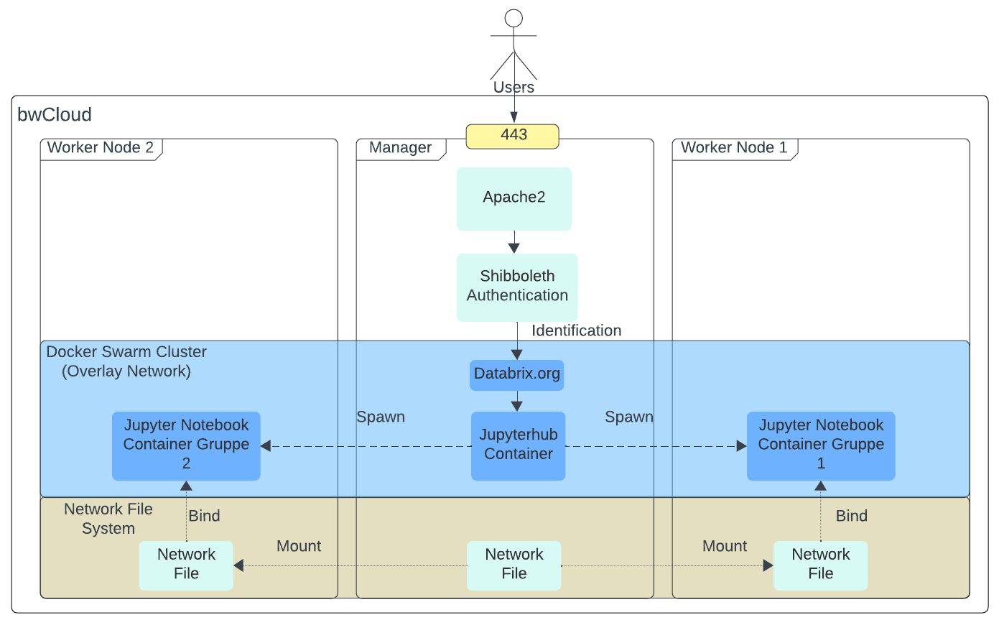

In diesem Abschnitt lernen Sie, wie Sie eine Web-Anwendung deployen. Diese Web-Anwendung wird auf dem Manager Node erstellt und dann auf die Worker Nodes verteilt. Stellen Sie sich vor, ein Student loggt sich in eine Web-Anwendung ein und möchte direkt mit dem Programmieren beginnen. Der Manager Node startet dann einen Docker Container auf einem Worker Node, sodass der Student die Rechenressourcen dort nutzen kann, um seine Programme auszuführen.
Dieses Abschnitt gliedert sich in folgende Abschnitte: